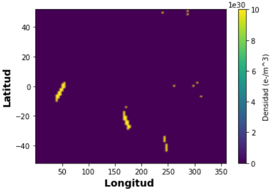

Cambio climático - Ionosfera
En la ionosfera se llevan a cabo procesos directamente relacionados con la densidad de electrones, variando en el transcurso del día, estación del año y posición geográfica. [https://geored2.sgc.gov.co/investigacion/gnssIonosfera/Paginas/default.aspx]. Las fluctuaciones de temperatura son causadas por cambios meteorológicos cercanos a la superficie terrestre. De acuerdo a información proporcionada por el medidor de velocidades de iones se relaciona el siguiente mapeo.
